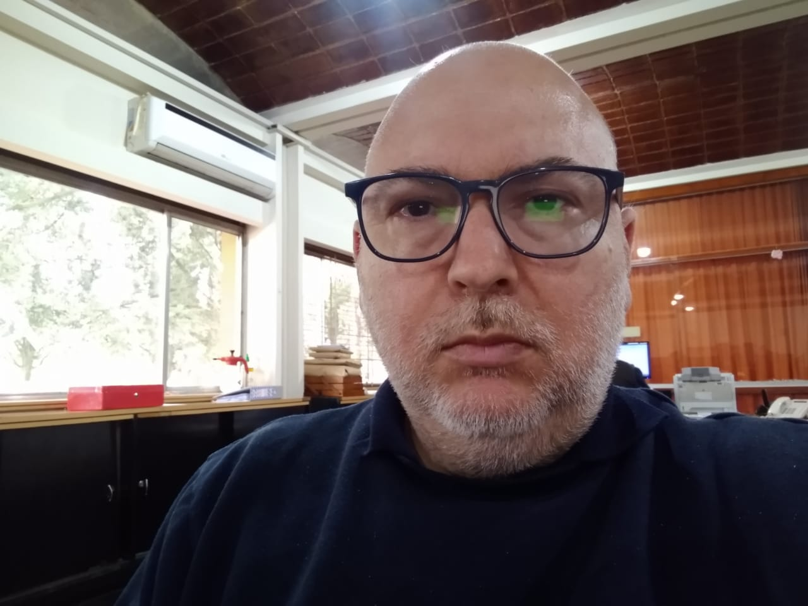

Titulo
Curriculom Vitae - Armando Javier Rodriguez
Descripción Personal
Nombre Completo
Rodriguez, Armando Javier
Edad
51 Años
Email
ajr250571@gmail.com
Celular
+54 381 4755771
Direccion
Entre Rios 245 Depto 9 - S.M. de Tucuman - Argentina
Educación
- Estudios Primarios Completos
- Estudios Secundarios Completos
- Estudios Universitarios Incompletos (Ingenieria en Sistema)
Skills
Habilidades Generales
Trabajo en equipo
Pensamiento Critico
Flexibilidad
Resolución de Problemas
Informatica e Ingenieria
Gestion de Bases de Datos
Microsoft Office
Redes de Computacion
Desarrollados de Aplicaciones de Escritorio (Visual Fox Pro 9)
Finanzas
Analisis de Costos de Produccion
Contabilidad
Tu foto

Hobbies
Me apasiona las Caminatas y la Pesca.
Espectativas
Estoy estudiando esta carrera porque me apasiona la programacion y quiero ser programador web full stack.
Elegi Henry Academia por su comunidad, por la posibilidad de encontrar un trabajo en el sector y por la formas de
pago que implementa.
Al final de la carrera espero conseguir un trabajo mejor remunerado que mi trabajo actual, mayor a 1.000 u$s/mes.